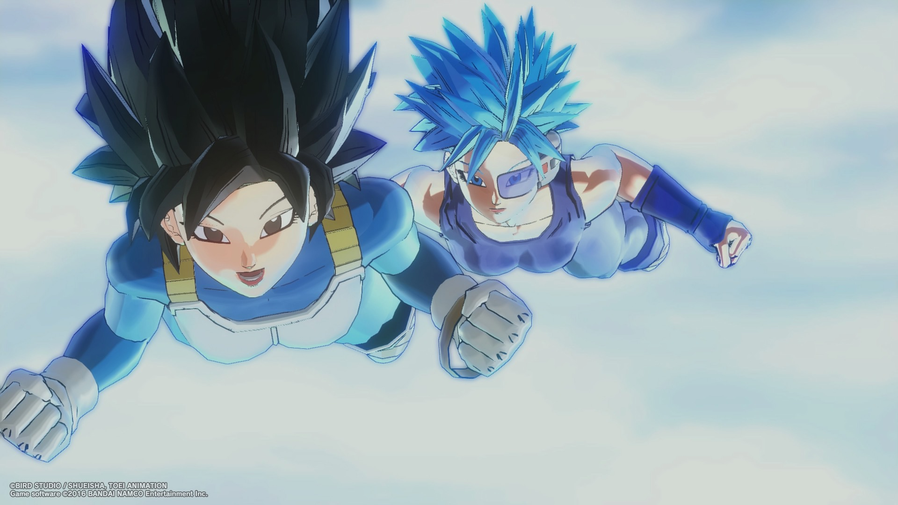
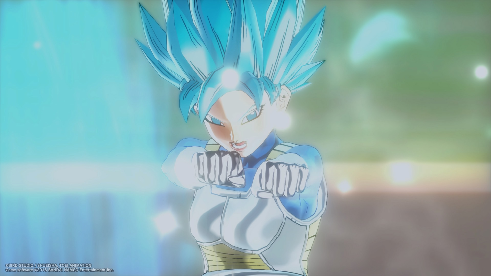
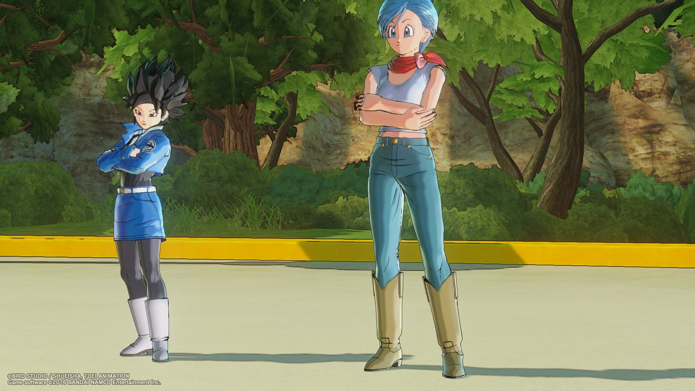

Sadala and Peas
   Sadala (left) and Peas (right) are two surviving Saiyan warriors from Universe 7. They originate from a lost fleet of elite Saiyans who were sucked through a wormhole into an unknown universe during a mission, coinciding with the destruction of Planet Vegeta by Frieza.
Appearance
Sadala and Peas are designed to parallel the dynamic of Vegeta and Nappa, though with key differences. Sadala is stern, proud, and holds a royal bloodline connection as the great-niece of King Vegeta, making her a possible successor to the Saiyan throne. Unlike Vegeta, however, she genuinely values the life of her comrade, Peas. Peas is her loyal companion—fierce, brash, and destructive in battle.
Personality
- Sadala: Noble, commanding, prideful. Driven by her lineage and the burden of survival, she balances the harsh pragmatism of a warrior with a deep sense of loyalty toward Peas.
- Peas: Rowdy, quick-tempered, and reckless, yet deeply loyal to Sadala. Provides comic relief at times but is also devastating in combat.
Powers and Abilities
- Both Sadala and Peas possess the raw power of elite Saiyan warriors.
- They survived the wormhole displacement, granting them adaptability and resilience to foreign universes.
- Sadala’s tactical mind makes her the strategist of the pair, while Peas’s raw strength mirrors the destructive force of Nappa.
History
- During a mission before Planet Vegeta’s destruction, their fleet was caught in a cosmic wormhole.
- They emerged in an unknown universe and have survived as outcasts ever since.
- Unlike most Saiyan survivors, their bond to each other and their royal ties (in Sadala’s case) keep their story tightly intertwined with Saiyan legacy.
Trivia
- Sadala’s name references the Saiyan homeworld of Planet Sadala.
- The duo are meant to mirror Vegeta and Nappa, but with a more mutual bond.
- Sadala is the only known female with direct royal lineage after King Vegeta.
See Also
Category:Original Characters Category:Saiyans Category:Universe 7